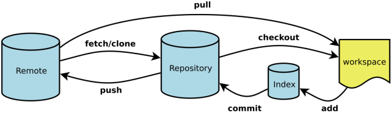
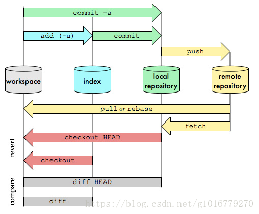

安装与配置
安装
Windows上安装Git，可以通过网页下载并安装Git安装程序，按默认选项安装即可。安装成功后，在任意文件夹下右键菜单中可以看到Git Bash Here和Git GUI Here。
用户配置
Git 自带一个 git config 的工具来帮助设置控制 Git 外观和行为的配置变量。 这些变量存储在三个不同的位置：
- /etc/gitconfig 文件: 包含系统上每一个用户及他们仓库的通用配置。 如果使用带有 --system 选项的 git config 时，它会从此文件读写配置变量。
- ~/.gitconfig 或 ~/.config/git/config 文件：只针对当前用户。 可以传递 --global 选项让 Git 读写此文件。
- 当前使用仓库的 Git 目录中的 config 文件（就是 .git/config）：针对该仓库。
每一个级别覆盖上一级别的配置，所以 .git/config 的配置变量会覆盖 /etc/gitconfig 中的配置变量。
在 Windows 系统中，Git 会查找 $HOME 目录下（一般情况下是 C:\Users\$USER）的 .gitconfig 文件。 Git 同样也会寻找 /etc/gitconfig 文件，但只限于 MSys 的根目录下，即安装 Git 时所选的目标位置。
当安装完 Git 应该做的第一件事就是设置你的用户名称与邮件地址。 这样做很重要，因为每一个 Git 的提交都会使用这些信息，并且它会写入到你的每一次提交中，不可更改，打开Git Bash Here进行如下配置：
$ git config --global user.name "your name"
$ git config --global user.email "your email"
再次强调，如果使用了 --global 选项，那么该命令只需要运行一次，因为之后无论你在该系统上做任何事情， Git 都会使用那些信息。 当你想针对特定项目使用不同的用户名称与邮件地址时，可以在那个项目目录下运行没有 --global 选项的命令来配置。
查看配置信息
如果想要检查你的配置，可以使用 git config --list 命令来列出所有 Git 当时能找到的配置。
$ git config --list
你可以通过输入 git config <key>： 来检查 Git 的某一项配置
$ git config user.name
基本术语


- Workspace：工作区，代码库的所有文件但不包括版本库(
.git文件夹内所有文件) - Index/Stage：暂存区，也叫索引，用于进行提交前的缓存区域，添加的修改,都是进入到暂存区了，肉眼不可见 通过
git status可以看到修改的状态。 - Repository：仓库区（或本地仓库），也存储库，提交的目标库
- Remote：远程仓库
本地版本管理 - 基础篇
1. 获取Git仓库
1.1 在现有目录中初始化仓库
$ mkdir git_test
$ cd git_test
$ pwd
$ git init # 将当前文件夹设为仓库
$ Initialized empty Git repository in /Users/my-pc/testcms/.git/
$ git init project-dir # 在当前目录中创建project-dir仓库
瞬间Git就把仓库建好了，而且告诉你是一个空的仓库（empty Git repository），细心的开发者可以发现当前目录下多了一个.git的目录，这个目录是Git来跟踪管理版本库的，没事千万不要手动修改这个目录里面的文件，不然改乱了，就把Git仓库给破坏了。
1.2 克隆已有仓库
- 克隆本地仓库
$ git clone /d/Work/MakeSmartLabInstaller /f/make_installer
- 获取指定历史版本源代码
$ git clone /d/Work/MakeSmartLabInstaller /f/make_installer
$ git checkout fd9269a
- 克隆远程仓库
$ git clone http://xxx.xxx
2. 添加修改（将代码修改从工作区添加到暂存区）
- 常用命令
$ git add -A # 提交所有变化，也可使用--all
$ git add -u # 提交被修改(modified)和被删除(deleted)文件，不包括新文件(new)
$ git add . # 提交新文件(new)和被修改(modified)文件，不包括被删除(deleted)文件
$ git add dir # 提交文件夹
- 添加
.gitignore忽略某些文件避免提交
#ignore these files
/src/test/
.Test/
temp.txt
*.xml
3. 提交代码（ 将暂存区内容添加到本地仓库）
git commit -m "自己写注释以备后期查看提交内容"
4. 查看状态和日志
git status
git log
5. 删除文件
git rm <files>
git add -A
git commit -m 'remove <files>'
本地版本管理 - 高级篇
版本回退
当前版本HEAD，上一个版本就是HEAD^，上上一个版本就是HEAD^^，当然往上100个版本写100个^比较容易数不过来，所以写成HEAD~100。
$ git log
$ git log --pretty=oneline
$ git reset --hard HEAD^
# 回退到新版本
$ git reflog
$ git reset --hard commit-id
管理修改
远程版本管理
上传本地代码
1. 创建Github仓库（远程仓库）
登陆Github创建一个新的仓库Create a new repository，
2. 获取git地址
https://GitHub.com/xxx/xxx.git
# 或者
git@github.com:xxx/xxx.git
3. 关联远程库
- 克隆
Github仓库
$ git clone https://GitHub.com/xxx/xxx.git
# 或者
$ git clone origin git@github.com:lsx-123/xxx.git # 速度快一些
- 关联本地已存在库
git remote add origin git@github.com:lsx-123/xxx.git
4. 创建本地代码（如有代码直接拷贝至本地文件夹内）
5. 上传本地代码
$ git add .
$ git commit -m "首次上传xxx代码"
$ git push -u origin master # 第一次使用 -u，后面就可以不使用该参数了
6. 下载远程代码
$ git pull
操作命令
Git diff
用于比较两次修改的差异
- 比较工作区与暂存区
$ git diff 不加参数即默认比较工作区与暂存区
- 比较暂存区与最新本地版本库（本地库中最近一次
commit的内容）
$ git diff --cached [<path>...]
- 比较工作区与最新本地版本库
$ git diff HEAD [<path>...] # 如果HEAD指向的是master分支，那么HEAD还可以换成master
- 比较工作区与指定
commit-id的差异
$ git diff commit-id [<path>...]
- 比较暂存区与指定
commit-id的差异
$ git diff --cached [<commit-id>] [<path>...]
- 比较两个
commit-id之间的差异
$ git diff [<commit-id>] [<commit-id>]
- 使用
git diff打补丁
$ git diff > patch #patch的命名是随意的，不加其他参数时作用是当我们希望将我们本仓库
工作区的修改拷贝一份到其他机器上使用，但是修改的文件比较多，拷贝量比较大，此时我们可以将修改的代码做成补丁，之后在其他机器上对应目录下使用 git apply patch 将补丁打上即可
$ git diff --cached > patch # 是将我们暂存区与版本库的差异做成补丁
$ git diff --HEAD > patch # 是将工作区与版本库的差异做成补丁
$ git diff Testfile > patch # 将单个文件做成一个单独的补丁
拓展：git apply patch 应用补丁，应用补丁之前我们可以先检验一下补丁能否应用，git apply --check patch如果没有任何输出，那么表示可以顺利接受这个补丁。另外可以使用git apply --reject patch将能打的补丁先打上，有冲突的会生成.rej文件，此时可以找到这些文件进行手动打补丁
参考文献
- 廖雪峰， Git教程
- [Git官网教程]https://hexo.io/docs/deployment.html)